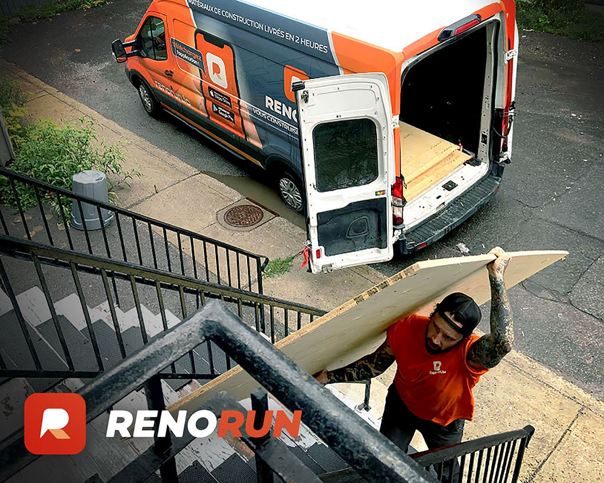
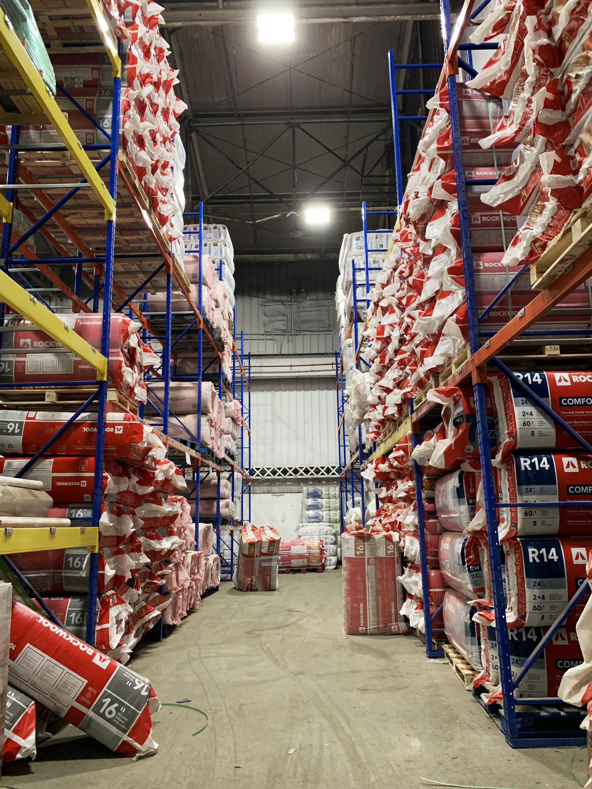
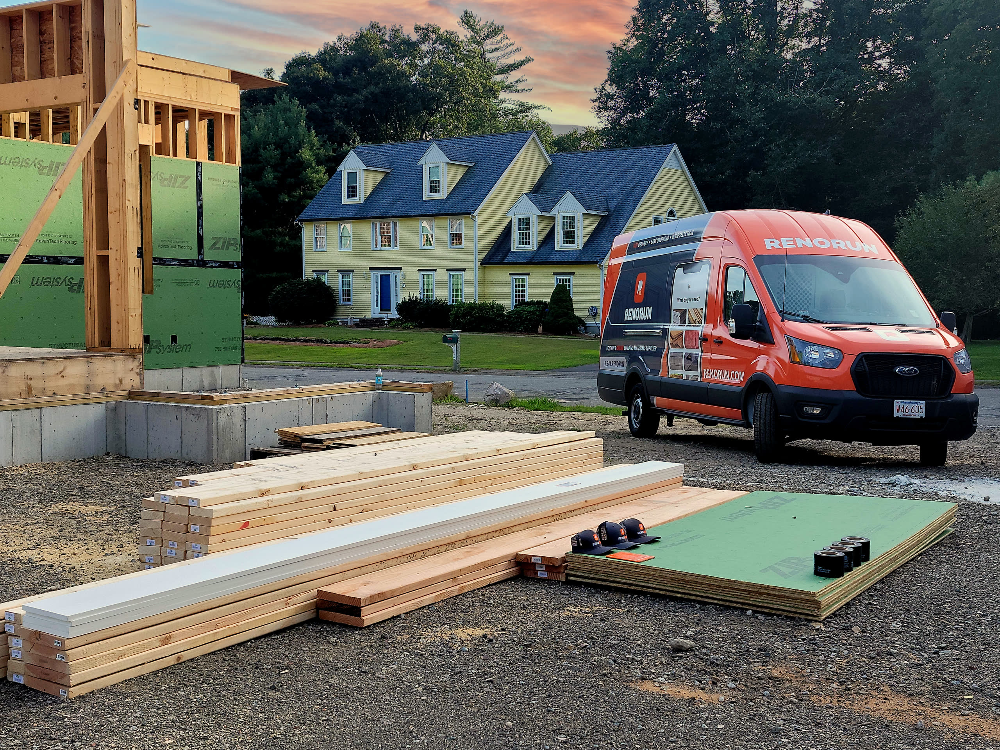
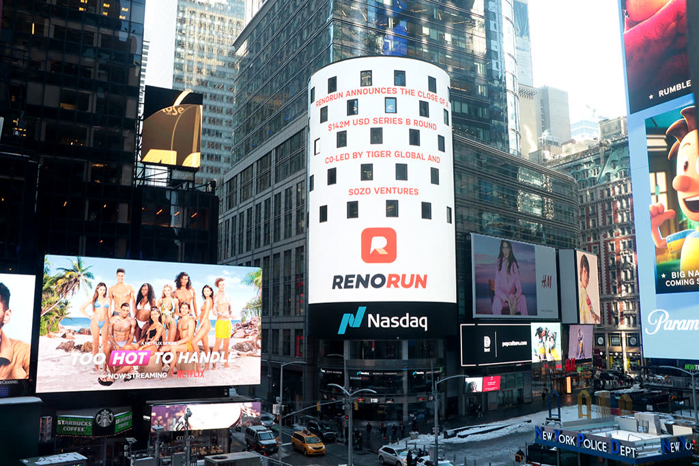

Mike Jerugim, case study · RenoRun
Construction runs on tight timelines.

When materials are missing or delayed, everything grinds to a halt.
We listened to contractors, site supers and delivery crews.
Their shortcuts, their stress points, paired with stakeholder interviews and a close look at market conditions.
- Contractors
- Site supers
- Delivery crews
- Stakeholder interviews
- Market conditions
The bottleneck was not procurement. It was the unpredictability around it.
Everything is on schedule until someone realizes the wrong item arrived, or a crucial part was never ordered.
One oversight sends a crew home early.
A modern e‑commerce experience tailored for construction.

Get it today.
What is coming now, what is coming later, and why.
Replace guesswork with clarity. Every order at a glance.
Constant testing with internal teams, long-time customers and new users.
A healthy rhythm of collaboration with engineering, and a shared design system that kept everything consistent and easier to maintain as the product and team grew.

Time and momentum, given back to the crew.
As Head of Design, I shaped the vision, led the research and design, and built the team that carried RenoRun through its Series B.
A team of twelve: product designers, UX researchers and marketing designers, hired and mentored into a customer-centered product organization.

$0M Series B
More work, or the next case study.
RenoRun case study by Mike Jerugim. Head of Design. Write to Mike